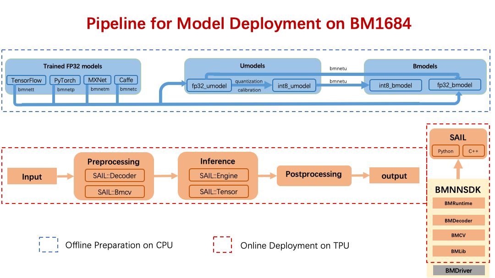

Introduction¶
Sophon Inference is an open source tool developed based on Bitmain’s original deep learning development kit “BMNNSDK”. It is designed to help you quickly deploy your model on the Sophon TPUs.(https://sophon.ai)
The figure above shows the process of deploying a deep learning model to a TPU using Sophon Inference. Below we will explain Some basic concepts are in conjunction with the above diagram.